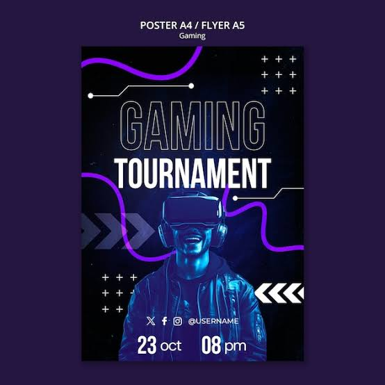

Don't miss the tornument. stay tuned for more updates
Because your query is very broad, it's unclear exactly which FF (e.g., Garena Free Fire, STAUFF Flat Face hydraulic couplings, Biolog microplates) you are referring to.Could you specify which FF instructions you are looking for?If you are trying to troubleshoot a specific issue, please tell me:What device, game, or equipment you are working with.What specific step or error you are stuck on.Providing a few more details will allow me to give you the exact steps, tips, or troubleshooting guides you need. AI can make mistakes, so double-check respo
Free Fire esports instructions involve four core pillars: team formation, match entry, gameplay rules, and fair play. A 4-player squad (plus optional substitute) must be registered. Players must join custom rooms within 5 minutes of receiving the ID and password to avoid disqualification.Follow these step-by-step instructions for a standard Free Fire tournament:1. Registration & Roster RulesSquad Size: Teams must consist of exactly 4 players. Substitutes are usually allowed if registered prior to the tournament.Details: In-game usernames and Free Fire ID numbers must exactly match the registration form.Age & Identification: Organizers often enforce a minimum age (typically 13+) and require official identification (student or government IDs) for finals.2. Equipment & Device LimitsPlatforms: Only mobile phones and tablets (iOS and Android) are permitted.Emulators: Emulators like BlueStacks or PC clients are strictly prohibited.Connection: Players are entirely responsible for their own internet stability; no match restarts will be provided for network issues.3. Match Day ProtocolCheck-in: Teams must confirm their participation prior to the event (often via Discord or tournament websites).Lobby Entry: The team captain will receive a custom room ID and password. Teams must enter within the 5-to-10 minute grace period.Maps & Modes: Matches typically feature Battle Royale modes (Bermuda, Kalahari, Purgatory) or Clash Squads.4. Code of Conduct & CheatingIllegal Software: Hacks, scripts, aimbots, modified APKs, and VPNs lead to instant, permanent disqualification.Teaming: Collaborating with enemy squads is grounds for immediate ban.Glitching: Exploiting in-game bugs is strictly forbidden.For tips on how to improve team coordination, shot-calling, and tournament rotations:21sFF ESPORTS TRAINING & TEAM CO-ORDINATION ...ONSPOT ESPORTSYouTube · 27 Jul 2021For a visual breakdown of how to find and register for upcoming competitive tournaments:4:24How to Register more and more Esports Tournaments ...cHiRaYu GaMiNgYouTube · 4 Dec 2024If you want to prepare for competitive play, tell me:What is your team's average rank/tier?Are you planning to play Battle Royale or Clash Squad?Do you need help finding community tournaments to join?Let me know so we can plan your next step.6 sitesFree Fire eSports Tournament Rulebook - Studocu9 Apr 2025 — Game Mode: Battle Royale - Squad (4 players per team). Format: - Qualifiers: Multiple matches to filter top teams. - Semi-Finals: ...Studocufree fire e-sports tournament - ScribdFREE FIRE E-SPORTS TOURNAMENT * OFFICIAL RULES & INFORMATION. ... * Tournament Name: Free Fire eSports Tournament. ... * • ... * •...ScribdFree Fire Tournament Rules 2025 | PDF - ScribdRULES AND REGULATIONS. Player Guidelines: ... It is a 4(+1) player team tournament. A 4 man-starter roster and up to 1 substitute.ScribdShow all Web resultsFree Fire tournament | RulesToornamenthttps://play.toornament.com › en_US › tournaments › ru...Match Rules: Team Size: Each team must consist of exactly 4 players. Map Selection: Maps will be randomly selected from Bermuda, Kalahari, or Purgatory ...Read moreFree Fire Tournament 2.0 Rules & Format | PDFScribdhttps://www.scribd.com › FF-Final-Rules-and-Regulations1. All the 4 groups will get to play 1 match in Full Map(Bermuda)

The Characters: There are currently over 50 playable characters in Free Fire, all with their own unique survival abilities that inspire distinct playstyles, team compositions, and cut-throat strategies. Some teams love to rush into the fight unannounced while others find high ground to snipe away at a distance. Whatever gets you to the end goes. The Plot: An incredibly fast battle royale, Free Fire has teams work together to traverse an ever-shrinking map. This includes looting areas for weapons, setting up defenses in a variety of buildings, and rotating as the zone shrinks. Teams must make split-second decisions to stay ahead of the competition and stay alive. The only way to win is to take down all the other enemies. Why: Free Fire has become one of the most popular esports in the world, boasting millions of views for bigger tournaments. If you want to experience a hype atmosphere with nonstop action and cheering, Free Fire at EWC is a showcase of what esports community and competition is all about.